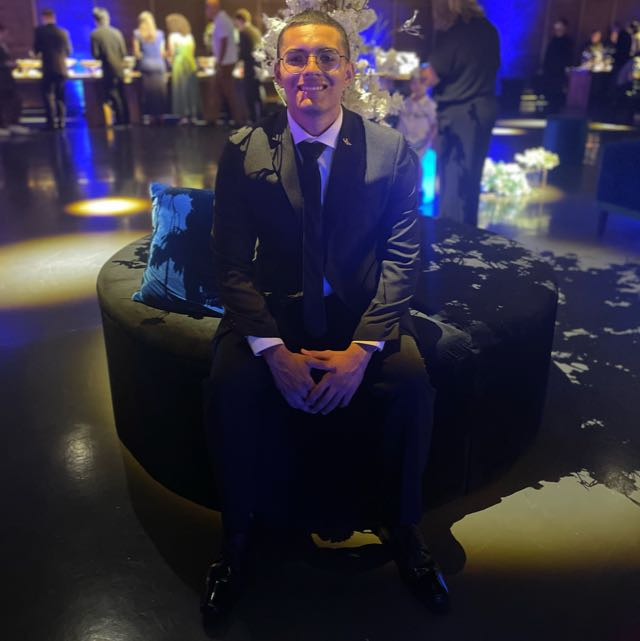
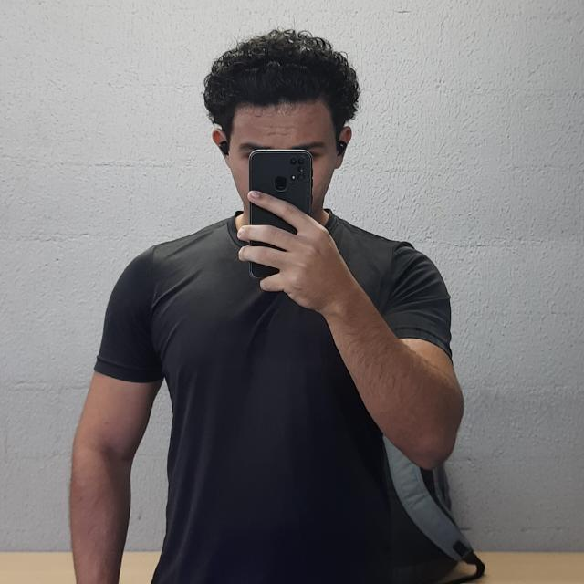
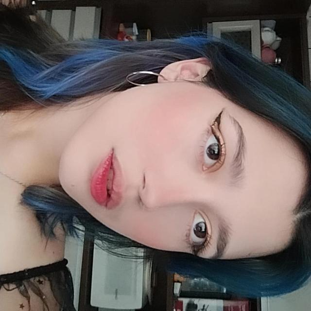
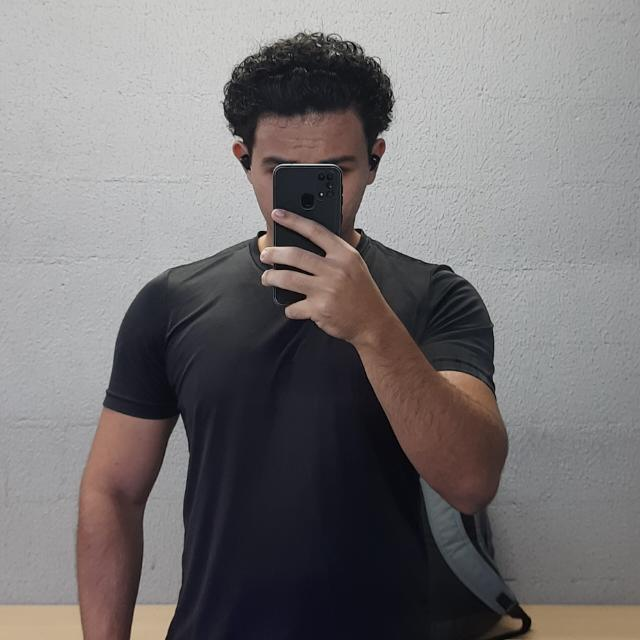
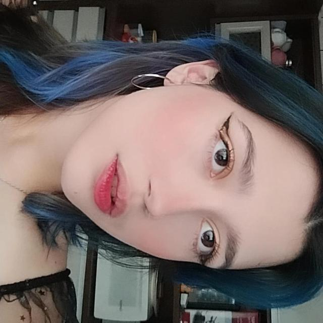

Nossa Equipe
Samuel – Scrum Master
É o facilitador do time. Samuel é responsável por garantir que os processos sejam seguidos corretamente, removendo impedimentos e promovendo um ambiente produtivo e colaborativo.

Lídia – Product Owner/Desenvolvedor principal
Responsável por definir e priorizar os requisitos do produto. Lídia atua como ponte entre a equipe e os interessados no projeto, garantindo que o time desenvolva aquilo que realmente agrega valor. Lidera o desenvolvimento das funcionalidades principais do software, cuidando do código, da lógica e da qualidade do produto final.
 

Caio, Carlos e Bianca – Suporte ao Desenvolvimento
Eles contribuem com tarefas de apoio fundamentais ao andamento do projeto, auxiliando na documentação, testes, validações e melhorias contínuas da solução.